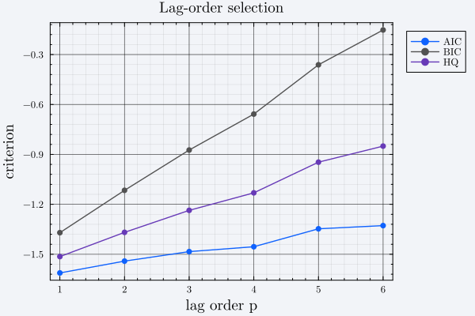

Pre-Estimation: Unit Roots, Cointegration and Lag Selection
Stages 1 and 2. Both are diagnostic — nothing downstream consumes their output — but they are what tell you whether a VAR in levels is the right model and what lag order to give it.
using BVAR
using DataFrames
using Random
Random.seed!(123)
df = DataFrame(
gdp = cumsum(0.5 .+ randn(150)), # I(1) by construction
cpi = cumsum(0.2 .+ randn(150)), # I(1) by construction
ffr = 2.0 .+ 0.5 .* randn(150), # I(0) by construction
)
end_vars = [:gdp, :cpi, :ffr]Unit root testing
adf_tests runs the Augmented Dickey-Fuller test for every variable in end_vec under three deterministic specifications, returning a Vector{Vector{ADFTest}} — one inner vector per variable, each holding the Type 1 (no constant, no trend), Type 2 (constant) and Type 4 (constant and trend) tests from HypothesisTests.jl.
adf = adf_tests(df, end_vars)
length(adf), length(adf[1])(3, 3)The three specifications are reported together rather than collapsed to a single verdict because the ADF test's deterministic terms materially change the conclusion, and which one is appropriate is a modeling judgement, not something the package should make for you.
using HypothesisTests
for (v, tests) in zip(end_vars, adf)
println(rpad(v, 5), " p-values (Type 1, 2, 4): ",
round.(pvalue.(tests), digits = 3))
endgdp p-values (Type 1, 2, 4): [1.0, 0.94, 0.262]
cpi p-values (Type 1, 2, 4): [0.999, 0.939, 0.151]
ffr p-values (Type 1, 2, 4): [0.179, 0.0, 0.0]As constructed, gdp and cpi are random walks and ffr is stationary, which is what those p-values should reflect.
Cointegration
johansen_trace_test returns the trace statistics and eigenvalues as a plain tuple. Compare the statistics against the usual Johansen critical values (they depend on the deterministic specification and are not tabulated here).
trace_stats, eigenvals = johansen_trace_test(df, end_vars, 2)
(trace_stats = round.(trace_stats, digits = 3), eigenvals = round.(eigenvals, digits = 4))(trace_stats = [67.613, 84.073, 84.075], eigenvals = [0.3629, 0.1039, 0.0])Element r of trace_stats tests the null of at most r cointegrating relations against the alternative of more.
Lag selection
The four criteria — aic, bic, hq, fpe — score a VARresult, the lightweight fit produced by BVAR.generate_VARresult. Note that neither that function nor BVAR.get_endogenous is exported, so both need qualifying, and that VARresult is a different, lighter object than the VARestimate returned by estimate_var.
Y = BVAR.get_endogenous(df, end_vars)
results = [BVAR.generate_VARresult(Y, p) for p in 1:6]
for (p, r) in enumerate(results)
println("p=", p,
" AIC=", round(aic(r), digits = 3),
" BIC=", round(bic(r), digits = 3),
" HQ=", round(hq(r), digits = 3),
" FPE=", round(fpe(r), digits = 5))
endp=1 AIC=-1.612 BIC=-1.37 HQ=-1.514 FPE=0.27554
p=2 AIC=-1.541 BIC=-1.116 HQ=-1.368 FPE=0.37993
p=3 AIC=-1.484 BIC=-0.874 HQ=-1.236 FPE=0.52187
p=4 AIC=-1.455 BIC=-0.658 HQ=-1.131 FPE=0.70725
p=5 AIC=-1.347 BIC=-0.362 HQ=-0.947 FPE=1.05643
p=6 AIC=-1.328 BIC=-0.152 HQ=-0.85 FPE=1.48091Plotting the criteria against p is usually the fastest way to read them:
using Plots
ps = 1:6
plot(
ps,
[aic.(results) bic.(results) hq.(results)];
label = ["AIC" "BIC" "HQ"],
xlabel = "lag order p",
ylabel = "criterion",
title = "Lag-order selection",
marker = :circle,
)
All four are "lower is better". BIC and HQ penalize parameters more heavily than AIC and so select more parsimonious models in finite samples; with vars = 3, each extra lag costs nine more coefficients per equation block, so the penalty differences are not subtle. Hamilton (1994) is the standard reference — see the Bibliography.